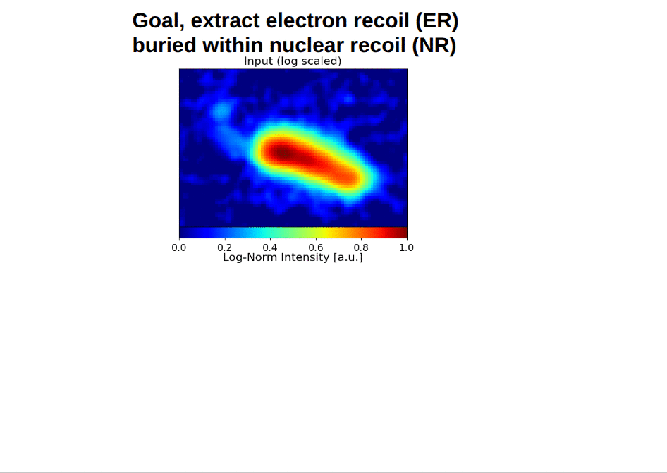

EASSI
Energy-Aware Segmentation for Scientific Images
Energy-Aware Segmentation for Scientific Images (EASSI) is a new deep learning framework for separating overlapping objects in scientific images while preserving object-specific intensities. Unlike traditional segmentation approaches that only provide boundaries, EASSI jointly predicts per-pixel intensities for each object and enforces approximate conservation of the observed signal. This significantly improves both topological and intensity reconstruction in regions of overlap, even in cases where a faint object overlaps with a much brighter object.
The initial application of EASSI is to the MIGDAL experiment, where faint electron recoil tracks must be disentangled from overlapping nuclear recoils in optical time projection chamber data. EASSI is interdisciplinary and has potential applications in astronomy (e.g. galaxy deblending) and in biomedical imaging.
A detailed paper describing EASSI and its performance is currently in preparation. Check back soon for updates and open-source software.
